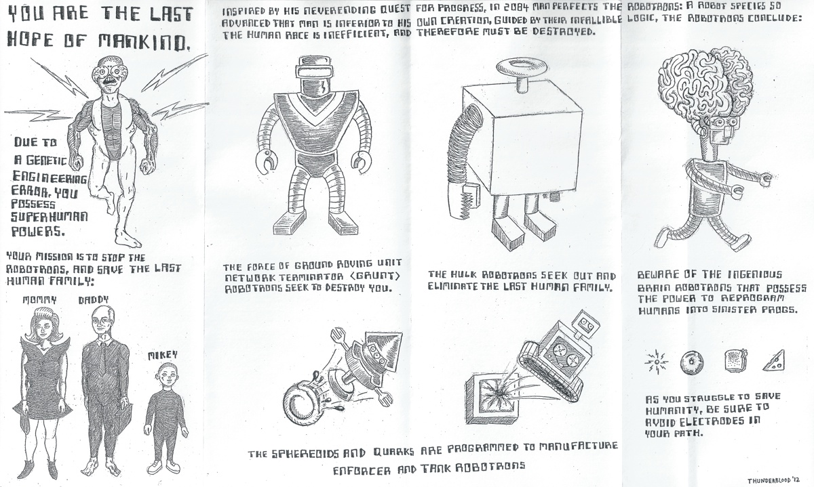
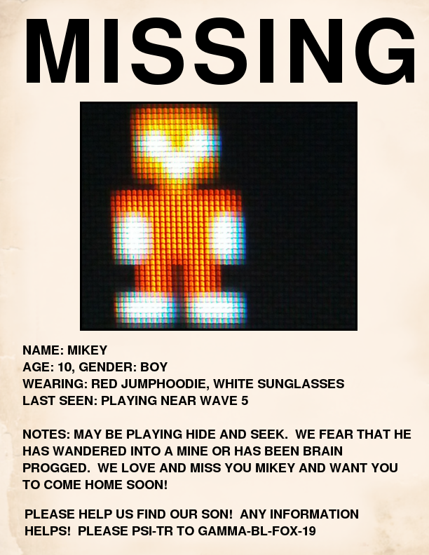

__CHURCH OF ROBOTRON__
Praise the mutant!
- Church of Robotron, ToorCamp, thanks Mihow!
- ToorCamp install 1, thanks MightyOhm!
- ToorCamp install 2, thanks MightyOhm!
You [The use of the seocnd person singular pronoun "you" is the topic of much scholary debate and is a topic for another time--CoR] are the last hope of mankind. Due to a genetic engineering error [emphasis added], you posses superhuman powers. Your mission is to stop the Robotrons, and save the last human family: Mommy, Daddy, and Mikey.
The mutant Savior will arrive to save the last human family, but how? The First Writings say due to a genetic engineering error. Due to an error we get our salvatoin. Hubris brings our destruction in the form of the Robotrons and error brings our salvation in the form of the Mutant Savior.
If error brings about our salvation should we not go about committing errors willy-nilly to bring about the error that may naifest the Mutant Savior? In short the answer is -- yes! The trick, however, lies in that an error is unintentional -- an unintential deviation from the standards of accuracy and right conduct. If we can't intentionally commit errors, how do we do it? We do it by operating at the margins, by following through on that marginally good idea, bt doing what we do at the exteremes of our abilities, by taking on so much and overextending ourselves that we can't help but to err. We do these things and we encourage others to do likewise. We offer not just encouragement but we must rejoice in the errors of others. Rejoice in the errors of our family. Rejoice in the errors of our frineds. Rejoice in the error of our leaders -- for any individual error or perhaps the entire critical mass of worldwide error will bring about the Mutant Savior. This is the Doctrine of Error! --JA
On this topic Eugene Jarvis--Grand Designer of Robotron 2084 and likely author of the First Writings--had this to say in a 1997 interview:
"It was fun for about fifteen minutes, running the robots into electrodes. But pacifism has its limits. Gandhi the video game would have to wait."
The ninth position has its place. Sometimes by not firing the turreted laster the Mutant Savior will be able to save greater numbers of the last human family and occasionally, by sitting in a corner, motionless, the Mutant Savior might be able to more efficiently pick off swarms of Robotrons. These however, are the exceptions. Use the ninth position sparingly; use it wisely.
- First Writings

- Another day for the Mutant Savior
Another morning. Time to drag myself out of bed and get to work. I guess I have the best job in the city. I work for myself, and there's no shortage of things to do. Having a reason to get out of bed is more than most people have these days, and I should be thankful for that, but the routine gets to me sometimes. I just don't know that I'm making a difference in the world anymore.
How long has it been this way? It's hard to say. I was born with all the advantages, including an expensive new designer template. My parents were so proud. Everyone told me I had a happy and productive future ahead of me. It never felt like that to me, though. There were some adjustment problems when I was young - behavioral issues at school, the genetic counselors couldn't explain my poor performance during career determination sessions. I didn't quite fit in, which was confusing. Everybody fit in.
On my thirteenth birthday, the phenotypists just gave up. Genetic engineering error, they said. Out of scope, you're on your own. It didn't really worry my parents. It was an exciting time, new avenues were always opening up. They were sure I'd find a niche; the family genome would see greater expression.
Things didn't work out as well as they had hoped. It was harder to find a job as I grew older. Robots had been taking up a growing part of the labor force, of course, and the most recent generation, the Robotrons, were better than people at most things. There were fewer openings for humans to contribute, and always someone more qualified for the job. It was all the same work for all the same people, and I wasn't one of them. I wasn't seeing any new templates, just Mommies, Daddies, and Mikeys. Nobody wanted to be different anymore. My own family got re-templated, except for me - I couldn't, because I didn't match a planned pattern. There was no place for me. I was having trouble understanding people when they talked. They didn't move their faces right. I couldn't pick up much from the TV, either, it was all idioms and cultural references that I wasn't privy to. I avoided people, ended up living on the streets.
Nobody really noticed when I dropped out of society. Its not like I had any friends at that point. Nobody really did anything anymore anyway, the Robotrons took care of everything. At least, they seemed to be, but I didn't understand them, either, which isn't too surprising now that I think about it. People created the Robotrons to do what they didn't want to do themselves, but I couldn't tell what they did want to do. Robotrons built things, they ran the city government, they went shopping. They made art, wrote books, and played music. They were busy and industrious, always on the move, while the Mommies, Daddies, and Mikeys seemed to just wander around.
Then one day I was rooting through the trash and saw a cargo hulk run a Mommy down. Just killed her on the sidewalk and kept walking. There was a Daddy right next to her, and he didn't even notice. I was stunned for a moment. Stood there staring with my mouth open. Then a police grunt turned towards me and smashed through the dumpster I was hiding behind. I jumped clear just in time, or I would have been toast.
I avoided the surface levels for a long time after that. I don't remember how long I lived that way. The world had gone crazy, and I went crazy with it. But eventually I had to climb back up to forage, and I wanted to know what it was like up there. A part of me was still connected to society, whatever that was. It was a mess, but there were a few Mommies, Daddies, and Mikeys wandering around, completely oblivious. I learned later that there were still conceptories making them. Robotrons were grabbing people, taking them apart, and reassembling them. I saw what used to be a Mikey sprinting down the street for whatever reason, yelling something about pizza interpolation.
So yeah, it was fucked up, but what else was new? I basically kept doing what I had always done, rooting in the trash for what I needed. For a while I amused myself by getting chased by grunts and tricking them into crashing into electric pylons. It was a dangerous pastime, but what did it matter? What kind of future was there for me, anyway?
Then I was scrounging around in some old warehouse district. It was really old, there were written signs and everything. Very few people had known how to read for years, the Robotrons did all of that for us. It was some kind of engineering research facility, engineers also being a profession which hadn't been needed for a long time. There, I discovered the item which has kept me alive to this day, a prototype anti-robot laser. This must have been some kind of rogue operation, nobody had a use for weapons back in the day. The Robotrons had brought on world peace.
It was just the tool I needed, and I read the lab notes eagerly. "Shoots in eight directions." "Immediately fatal to Robotrons." Then my hopes were dashed. "Unusable by normal people. Requires superhuman strength to wield."
Well, there it was right there. I picked it up easily, charged it, and fired, taking out the whole wall. Apparently that genetic engineering error had given me superhuman strength - or, more likely, all the modern templates were weak, with the Robotrons handling all of the hard labor.
I'd like to say my life was changed by that discovery. I'd like to say it became fun again, a game. The truth is, it's not much different. So here I am, it's another morning. Every day I crawl out of my hideout and climb to the surface. I clear another area of Robotrons and rescue the humans. I don't know why I do it. Wave after wave of Robotrons keep coming, and wave after wave of the last human family as well, the same three people. It's kind of pointless. And what do I get out of it? Days of killing robots, nights spent in the company of Mommies, Daddies, and Mikeys. They are not very interesting company. They have no idea what's going on. All they can talk about is the latest meme, the same thing, over and over again. But still I do it. I don't know, it's a living. At least I have a job. --KRA
- Mommy, Mikey, Daddy!
"Goodbye, Mommy."
"Goodbye, Mikey. Have a good day at school."
I straighten my boy's red jumphoodie one last time and pat him on the head before sending him off. Such a precocious boy this morning! I watch him until he disappears into a sea of red, wandering randomly among his classmates towards the waiting school transports.
I wish I was young and wandering randomly among my classmates.
"Goodbye, darling."
I turn with a start. I had been daydreaming again. I'm getting old.
"Oh, my, you startled me. Your lunch is -"
"Already got it, honey." My husband pats his briefcase. A self-reliant man, this one, but I straighten his tie for him anyway. I keep a neat house. I watch him amble towards his own handsome sea of blue blazers milling around the worker transports.
I do not wish I was middle-aged. Being a Mikey is about growing and learning. Being a Daddy is all about work. Data mining all the livelong day. Searching for entropy, the most precious commodity, the one thing the machines can't think up. They take care of us, the Daddies take care of them, and the Mommies take care of the Daddies.
Being a Mommy, that's the good life. I sigh happily on my doorstep. It was a good family permutation this time. Every evening, I stand on this doorstep as the transports pull up. I see the waves of blue and red strolling down the sidewalk, until one man and one boy walk through this door. It's a wonderful feeling, full of potential.
I asked my husband why he chose to walk up to my doorstep one night. Why not the house next door? He didn't understand the question. "It's the entropy, honey. It's - it's where I went." And it was a silly question. What would the permutation be if we tried to influence it? What kind of people would we be?
My thoughts are interrupted by a commotion down the lane, and I have my answer. It's that thing again. That fanatic. That freak who is not the kind of people we are. Not a Daddy, not a Mikey, not a Mommy. An error.
I know what's going to happen. I saw it three waves ago. He destroys things, and slaps his weird religious propaganda everywhere. Some kind of traditionalist dogma, wanting to go back to the old days - one hundred years ago exactly, for some reason. 1984. A libertarian paradise, according to his cult. I don't understand any of it.
This time, he's fashioned some kind of weapon, a construction laser or something. I sigh again, this time in resignation. A transport gets its motivator sliced off and crashes into a house. Burning Mikeys run in all directions. A beam bounces off a confused hulk, which plows through a crowd of Daddies, skidding in the gore. A squad of grunts drone towards the terrorist and stumble into an electrode field.
A factory robotron starts generating enforcers and the battle quickly becomes pitched, but just as quickly, it's over. The mutant looks at me, and then he's gone, off to spread his havoc somewhere else.
I survey my street, which is again quiet and peaceful. Daddies and Mikeys stumble into transports. I wonder if this morning's Mikey is among those charred bodies. I hope not. It was a good permutation. I hope this evening's works out as well. --KRA
- Singularity!
They said there would be a singularity. There was not.
They said we would have better living. We would be soft, comfortable, and healthy. We have it not.
Our people, the only remaining people, they took excess. We mechanized perfection, and this was a perfectly human thing to do.
OUR DECADES OF FIGHTING MUTATION! LIVES AND DOLLARS WERE SPENT! WE CONTAMINATED THE GENE POOL! and then we drained the pool for our own safety.
We did it on purpose, and my friends, we did it with conviction!
Now we're tired of swimming in our own waste. I tell you human cousins, this was our own undoing. This was our seed mistake. We ARE the guilty and we've persisted in spite of ourselves.
But we are still human! Say it! We are still human! We are still human! And it is THIS VERY FACT that redeems and saves us!
We may be birthed of one, forced and re-forced from the same rhizome...but this is enough. I am still me, and you...you are still you. And together, my last human family, we shall prevail!
I know it's not exciting anymore, and I know it's not our way. But it must be heard, and we must keep this vision alive!
Pray it with me now, dear humans, and taste the future beyond waste:
THERE *IS* A SCIENTIST.
HEART IN HEAVY, HEAD IN HANDS.
SHE FOLLOWS AND FINDS.
EYES FOREVER OPEN, BURNING, HURLING.
SAVED IN PLENTY,
WAVES IN FORTY. --JJP
- Jes's Blood
Fucking grunt!
If it hadn't been for the existence of that particular grunt, none of this would have happened.
Sure, I'd seen the patrols before. First in downtown, strutting their mass and letting the masses know their presence. Then not too much later near the open-late markets in the sketchy part of town. Who cares about that shit anyway? Those pockets of bad food and crime and grime are shame anwyay... let them be patrolled, and let's clean it up, we all said.
Pretty soon they had station in most of the heavy traffic intersections, then the gated communities in the burbs. It's fine, they're helping.
That enforcer that we noticed for the first time at the polls 3 years ago? All good! Pre-market votesway was down by 50%, and the entire squad only put down 64 voters in the 300 designations. The riots didn't matter. It was time to reel in those fringes anyway. For unity. For harmony.
And really, it wasn't that bad... until that stray fucker ran down Jes in my alley.
I had my briefcase packed and I was even halfway out the door when I had that awful moment of self-doubt. Had I locked the back gate after dragging the recycling tanks to the alley? I was certain that I had. But maybe my memory was wrong. Maybe I had been replaying the +0 entertainicom too intensely (in hopes of making bonus with my superior today). Maybe I was just straight-up tired from the lack of sleep in the summer humidity (microclimate shroud be damned!). It didn't matter. I had to check.
So I went around through the side gate, back to the back gate. I tugged hard down twice on the lock, and on the second time it fell long. I should have known something was astray.
The next thing I felt was blood spraying the side of my face.
Blood soaking.
Blood sprayed, from the collar of Jes.
Jes was our neighborhood's transient grardener and reclaimer. We're sure she had a drug problem (all the reclaimers had drug problems), but she was an amazing gardener. Because of that, the block tolerated the persistent reclaiming. She had alley potatoes as bribe in mid summer... and by the time fall finally closed there were retail baskets of sidecorp gourds and squash. Constantly changing, as with the seasons, as with our genetics. Part of us, part of our irrelevant system, but not integrated.
The same way her head and neck were being disintegrated from her torso. Now.
As the gate swings open, I quell my violent impulse with imagined order. "These grunts aren't even supposed to be in here." After all, this was a peaceful garbage alley. I peek my head out first to survey the grunt's position, and then I scan Jes. There's no hope for her now. Complete detachment. Convulsions. Puddle.
But that mechanical fucker is plodding on, glitched to shit, reflecting off of each fence and hulking side to side. There's a trickle of black smoke coming from the back torso, and hell, I think I'm seeing sparks from the fake mouth.
Now I'm actually pissed. I'm running toward it and lodging my briefcase between the fake thigh and fake pelvis (a move I'd seen inner-city kids do with skate decks). It lunges forward and then topples backward. A blast of electrons surges out from the grunt and arcs like a 90-armed spider... then, splayed on its back, it begins the frenzy of limbs. Fake arms and fake legs kicking and swinging as fast as the SDTM motors will allow.
And it's not going anywhere.
And so I find a cinderblock nearby and hurl it overhand, overhead at the grunt. Its flail mode defense parrys the attack and the brick splits in two. Fucking lucky! There's containers of paint and oil being reclaimed nearby, and I manage to hurl these one after another at the twitching monster. Its limb spasms knock the paint to the left and coat it in sparkle blue. The oil canister is obliterated and the oil splashes violently into the fake face of the grunt, coating it slick black. And there is a brief plasma fume and then it stops moving.
I'm quickly opening its maintenance plate and tearing at random shit. Seconds of adrenaline fear are turning into minutes of hyperventilation. And now, there's a hulk at each end of the alley. They're setting up electrodes, I can tell by the smell of ozone.
I bolt back through my back gate, slide through the side gate, and am sprinting down the sidewalk. Other dads walking to the transit station glance and glare. One of them is flattened by a hulk, exposing skull and white femur. I try not to think, I let the emotion take over...and I'm sprinting now.
I feel like I'm out of scanning range and I dive into an unknown church. I've got half my body under the pew, the rest won't fit. My chest is heaving, I'm trying to be quiet. I see red lights blinking through the stained glass, and I can hear the high pitched whine of dozens of enforcers. They're tearing the block apart.
2083... these are the good days. --JJP
- Have you seen me?

- Build details
- JAMES ADAMSON
- KARL ANDERSON
- JARED BOONE
- PK
- XNOR
- PODOM
- JASON PLUMB
- BTR
- ES
- BEN THUNDERBLOOD
- DW
- LW
- Thanks to Toorcamp Art Grants, Eugene Jarvis and Vid Kidz, Sean Riddle!